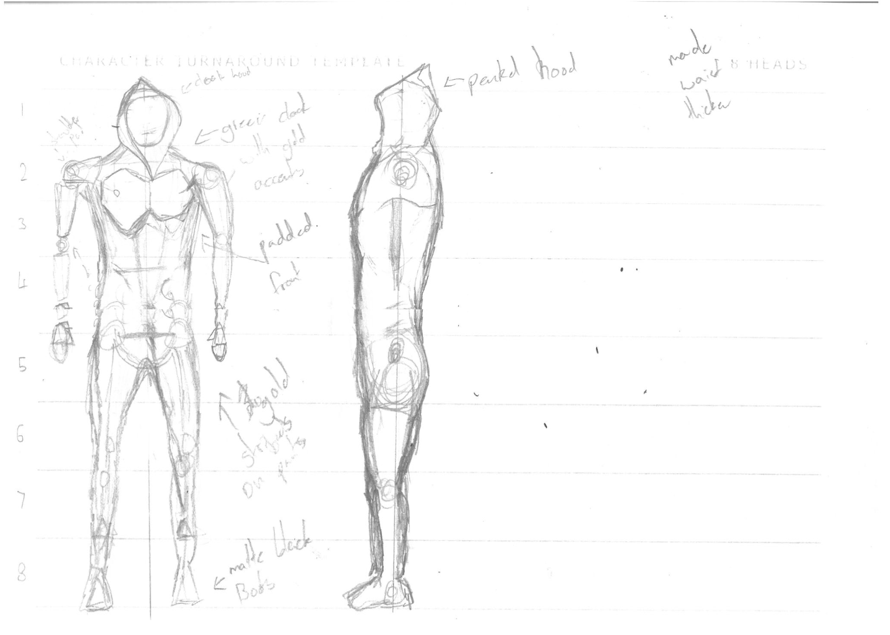

.jpg)
1.Character Turnaround
Development
I used a 8 head proportional guide to draw my game character on, this means that the body parts are all the correct size in comparison to each other.I chose to create a character that was 8 heads tall, i tried to make my character look adventurous by giving him a cloaked hood, I also created shoulderpads for a uniform.
Testing
I checked my characters symetry and that it was centered on the line, I checked that the scale of my side view compared to my fromt view were the same so that that it would match up and create a propper and reliable reference when I imported it into blender.
Feedback
Are there any obvios issues with my character turnaround?
"Its a bit wide abross the chest"-Robert
"Waist is too thin"-Charlie
"Upper body proportions are too big , Try making the legs larger and taller"-Kit

Improvements
I revisited the scale of the upper body and shrunk the upper chest and slightly enlarged the waist. I also moves the waist up and lengthened the legs. I later removes the characters original prosthetic arm and replaced it with a normal arm so it was symeterical for easy modeling.

2. Torso
Development
I tested my animation muiltiple times during and after I made it. I made sure that the loop was clean and there were no sudden movements or unintended movements. I ended up testing the legs over 30 times duting the animation prosess due to a reoccuring issue where they were bending outwards to fix this i changed the bone structure in the legs'(ilater found out that this could be fixed by moving the knee joint closer towards the fromt of the knee)'. I also tested muiltiple different bone configurations in the arm including a modified version of that of the legs. In the end i stayed with the original as it provided the largest variety of movement needed. After rigourous testing i got to a point to where my animation looked good enough however i was unable to fix the issue which caused the animation to look floaty.
3. Task Three
Feedback
My Main feedback was from Robert, Charlie and my teacher Rachael The main feedback was about the legs of my character being too short, and that my character should be semeterical for easy mirroring and rigging. I fixed both of these issues.
4. Task Four
Improvements
I mad several improvements to the character and animation and pre sketch, during the design prosess i made the legs longer and removed the prosthetic arm i had planned to simplify the later desighn steps and allow for mirroring i also had to fix the topology around the anke to as good as i could get it but the mesh is now solid. Later in the animatioon faze i changed the bone structue and redid the arms and legs in the running animation to make the movement more fluid, before this only the lower arm would move leading to a chopping motion but I fixed it.